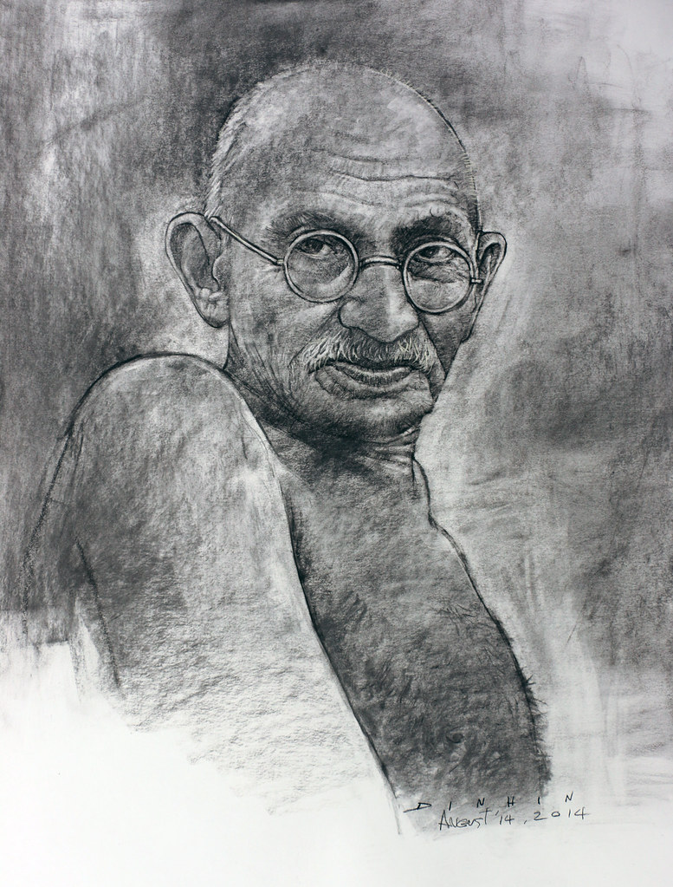

Mahatma Gandhi

Panting Of Mahatma Gandhi
Here is timeline of his great man
- 2 Oct 1869 - born in India, Porbandar.
- 1981 - Born and raised in a Hindu family in coastal Gujarat, western India, Gandhi was trained in law at the Inner Temple, London, and called to the bar at age 22 in June.
- 1893 - After two uncertain years in India, where he was unable to start a successful law practice, he moved to South Africa to represent an Indian merchant in a lawsuit. It was in South Africa that Gandhi raised a family, and first employed nonviolent resistance in a campaign for civil rights
- 1915 - aged 45, he returned to India
- 1921 - He set about organising peasants, farmers, and urban labourers to protest against excessive land-tax and discrimination. Assuming leadership of the Indian National Congress in 1921, Gandhi led nationwide campaigns for easing poverty, expanding women's rights, building religious and ethnic amity, ending untouchability, and above all for achieving Swaraj or self-rule.
- 1930 - Bringing anti-colonial nationalism to the common Indians, Gandhi led them in challenging the British-imposed salt tax with the 400 km (250 mi) Dandi Salt March in 1930, and later in calling for the British to Quit India in 1942. He was imprisoned for many years, upon many occasions, in both South Africa and India
- 1940 - Gandhi's vision of an independent India based on religious pluralism was challenged in the early 1940s by a new Muslim nationalism which was demanding a separate Muslim homeland carved out of India
- 1947 - In August 1947, Britain granted independence, but the British Indian Empire[10] was partitioned into two dominions, a Hindu-majority India and Muslim-majority Pakistan.
- 30 Jan 1948 - dies at the age of 78.